万物市場（Everything Market） / 2007
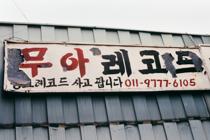


 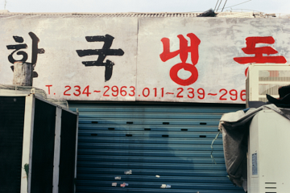
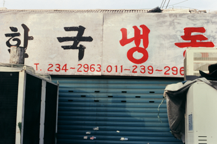
 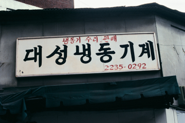
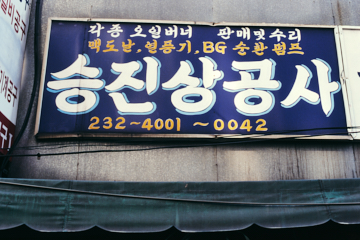
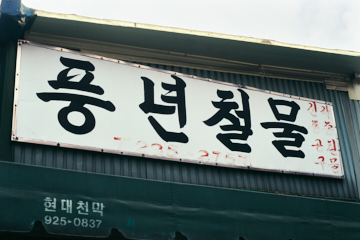
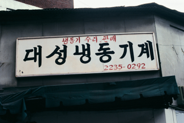
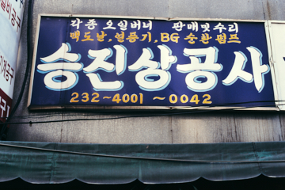
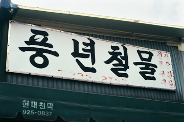
 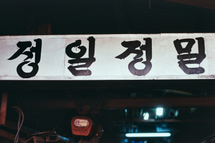
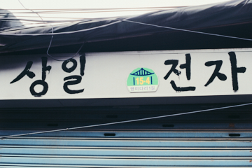
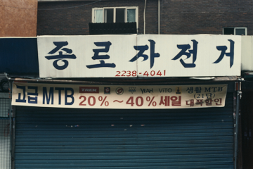
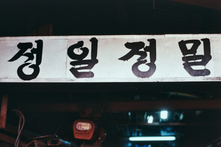
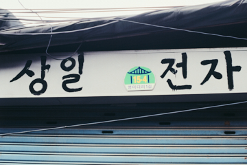
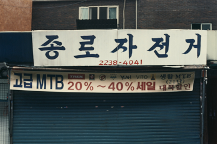
 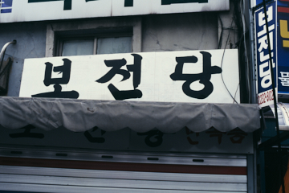
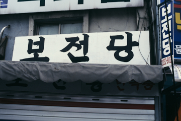

 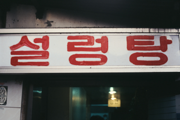
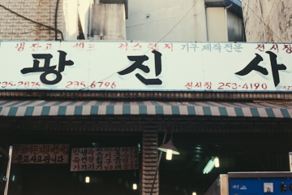
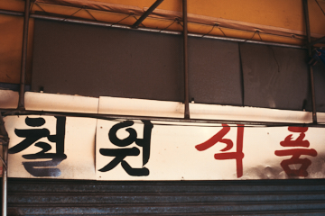
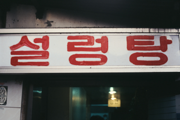
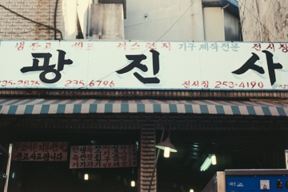
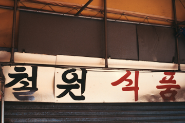
 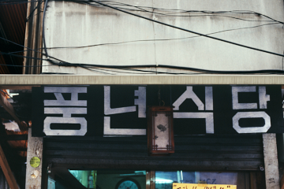
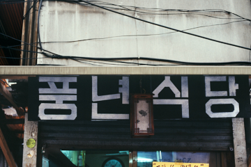
 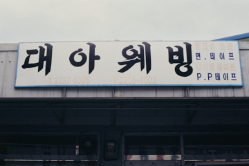
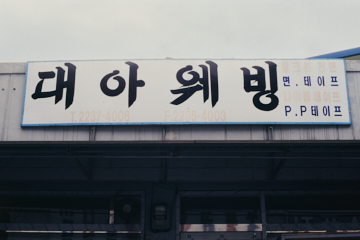

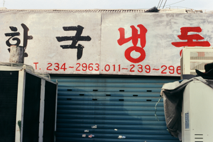
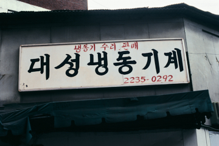
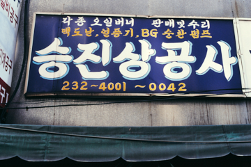
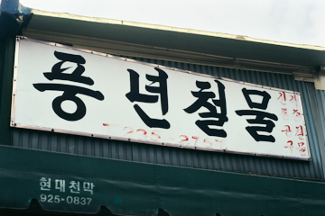
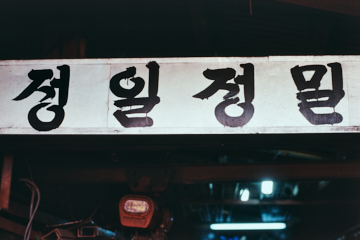
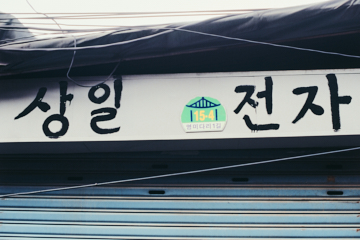
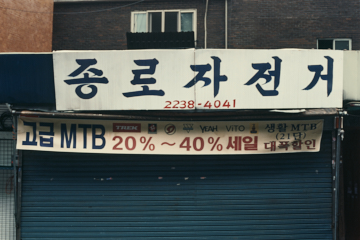
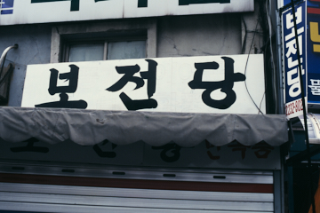
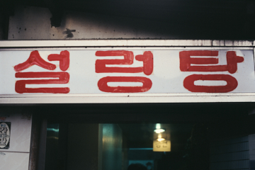
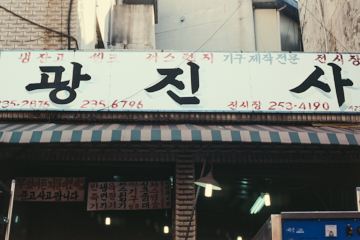
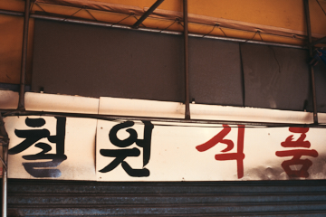
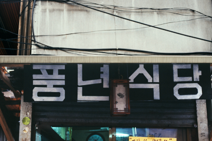
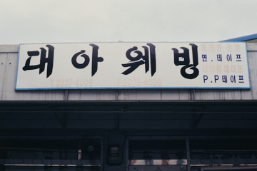
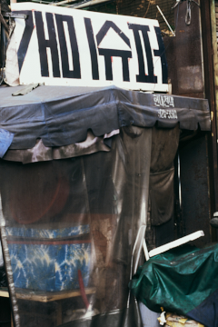


 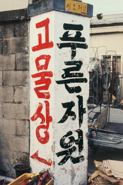
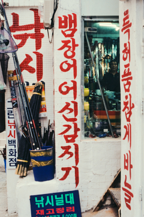
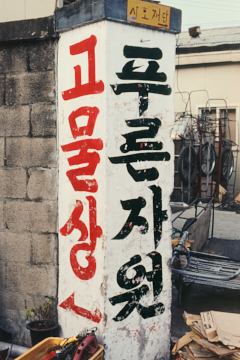
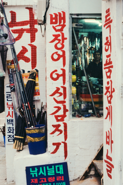


 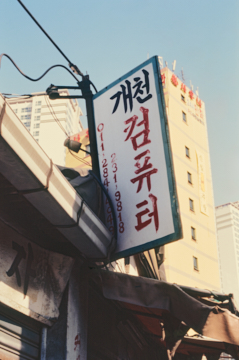
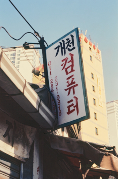
 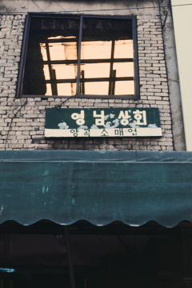
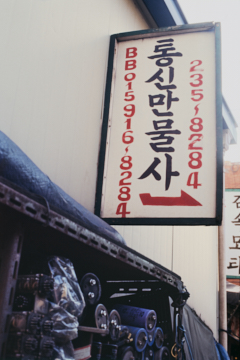
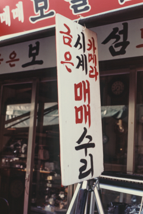
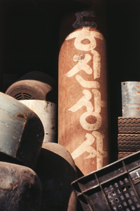
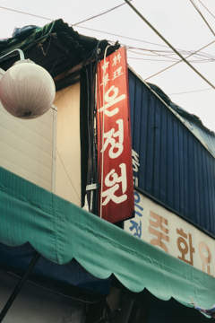
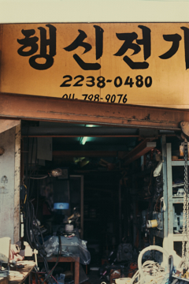
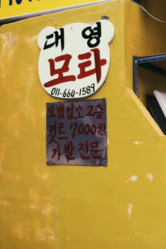
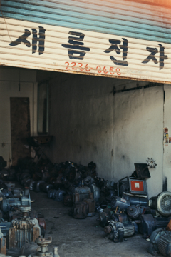
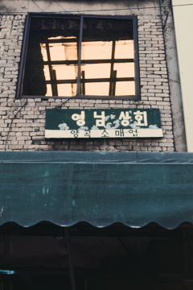
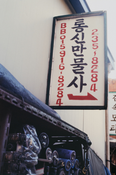
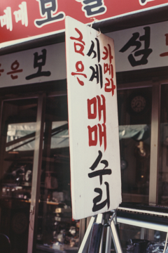
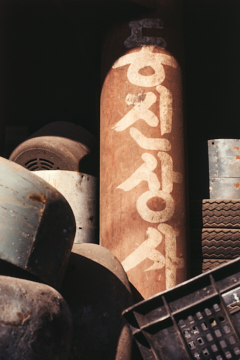
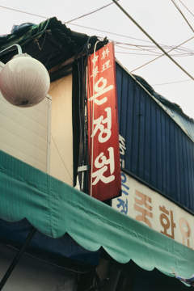
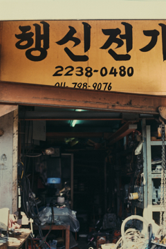
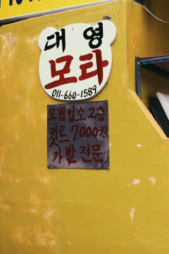
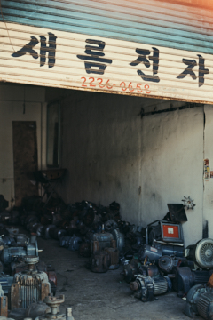

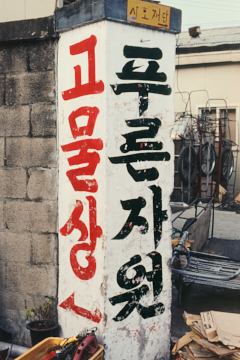
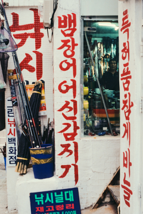
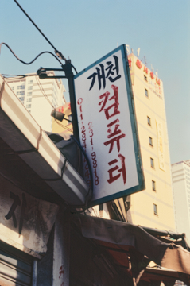
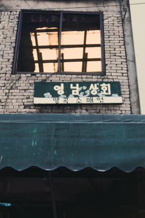
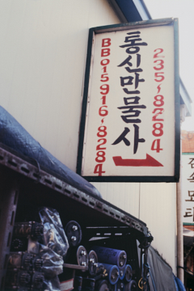
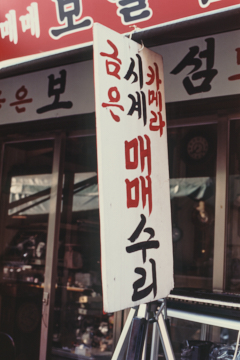
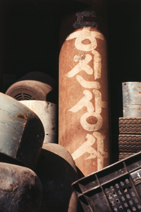
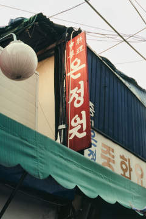
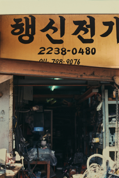
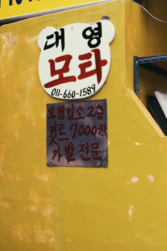
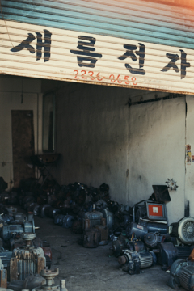
イ・ヨンが収集した万物市場の古い看板
朴英澤（パク・ヨンテク／京畿大学教授、美術評論家）
2007年、イ・ヨンは清渓川一帯の商店や、黄鶴洞の「万物市場」を歩き回り、店々に掲げられた看板を撮影した。当時彼が興味を引かれた看板は、トタン板にペンキを含ませた筆で書かれた屋号である。丹精込めた宮体風の書体で記されたハングルの文字は、古い時代のものとしてどこか強いレトロの香りを放っていた。純粋に文字だけで構成され、書体がもたらす筆致の味わいが凝縮された当時の看板は、アナログ看板の魅力をそのまま可視化し、まるで扁額のように掛けられている。〈保全堂〉、〈スリスター商社〉、〈アリ・スーパー〉、〈ムア・レコード〉、〈三富画廊〉などがそれだ。看板だけを写し取った写真の中には、ひたすら文字だけがぽつねんと置かれている。彼は都市の看板、看板に書かれた文字を採集したのである。それらは今では身の回りで見かけることの少ない稀有な看板だ。今日、誰が筆であのような文字を書くのだろうか。人の手の跡、労働の匂い、そして馴れた熟練の筆力が生々しく息づく看板は姿を消した。かつて手描きの映画看板が瞬く間に消えていったのと同じくである。手で直接文字を書いていた看板職人がいなくなり、そのような看板も消えた。今では機械がその役割を担っている。
とはいえ清渓川一帯の古い店には、いまだに昔ながらの看板が掲げられている。おそらく地方のどこか寂れた町にも、そのような看板が残っているだろう。いずれにせよ、それらの看板は消えゆく寸前のものだ。イ・ヨンはその死、欠如、消失を目撃し、拾い集めて写真に残した。看板への挽歌である。
早くも1930年代、金復鎮は当時京城市街を飾っていた看板の意味について言及したことがあった。資本主義の威力を看板に見抜いたのだ。看板は商品経済において不可避の宣伝道具であり、都市を支配する強力なイメージである。今日、都市の建物は無数の看板によってことごとく覆い尽くされている。外観をびっしりと、隙間なく占有する看板は、あらゆるものを圧倒し、華々しくも容赦のない文字を観者にほとんど暴力的に押しつける。それは人々の欲望の導火線に触れ、何かを渇望させると同時に、競うように自己の存在を可視化する。
イ・ヨンはそうした看板を注意深く見つめた。だが彼の眼に入ってきたのは、いかにもレトロな、もはや生き延びることのできなくなった、効率と合理性、機械化の大勢に押しやられた手仕事による、みすぼらしい看板であった。しかし逆説的に、それらの看板は言い表しがたい奇妙な感情を呼び起こす。妙な郷愁と回想の情が湧き、ふと切ない記憶を伴って立ち上がる。子どもの頃、町の看板屋の主人たちは、あのようにトタン板の地にペンキをのせ、手慣れた巧みな技でハングル書体を見事に書き上げたものだ。まるで行筆の書を描く者のように、昔の行商の民画家や床屋の絵描きたちのように。
思えば看板にもそれなりの歴史がある。木板に書いた漢字の看板から、トタン板にペンキで、そして洗練された見栄えのデジタル看板へと、変遷を重ねてきた。イ・ヨンが見せる看板は、過ぎ去った時間帯における韓国の看板史のある一瞬を、ふっと手渡してくる。その中には、忘れていた誰かの功力と手の力、そして素朴ながらも誠実だった屋号が呼び起こす追憶の余韻が濃い。
制作ノート
店主が変われば看板も変わるのが常だ。長いあいだ同じ場所で商いを続けてきたのだろうか。常識に反して、看板までも中古なのだろうか。黄鶴洞の中古在来市場のイメージは、古びて見える看板がひと役買っている。黒・赤・黄を用いた、純ハングルだけの看板は、キッチュな感性を呼び、手垢のついた中古品の印象を喚起する。看板はひとつの「類型」として機能していた。中古品は何より使用価値が先だ。もっともらしい包装は相対的に色褪せ、堅牢で用途が明確であってこそ価値を得る。時に機能より記憶が尊くなれば、骨董品へと化けることもある。ここにある看板は、中古品と骨董品の要素を備えている。いつでもペンキで書いては消せる形式、そして古風な書体とネーミングは、それが塗り重ねられたものか、実際に古いものかにかかわらず、中古在来市場のアイデンティティを示していた。
「30～40年になる」と語る店主の言葉からは誇りさえ感じられる。自店の看板でありながら、まるで忘れていたかのように「古いには古いよ」といった素っ気ない反応もある。看板は彼らにとって使い勝手の良い商品であり、貴重な古物だ。触れるものすべてが中古品で骨董品の場所で、看板だけが例外であるはずもなかった。
参考
 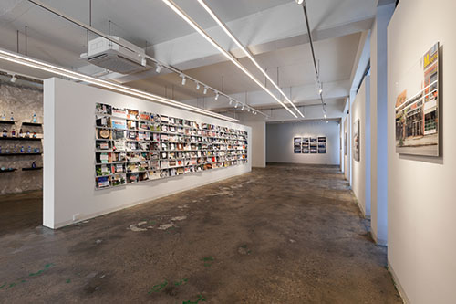
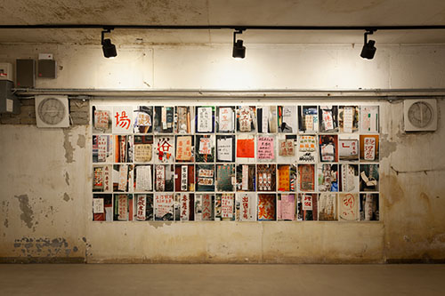
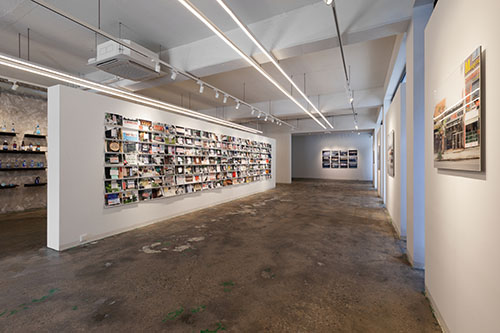
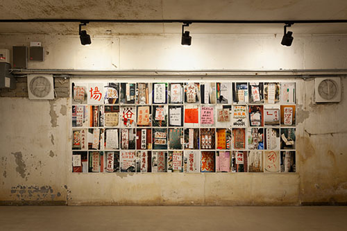

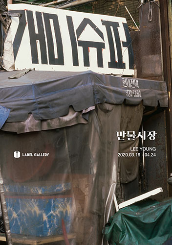

- 2020, 『万物市場（Everything Market）』, Label Gallery, ソウル — 個展
- 2010 『ASYAFF2010 特別展・太陽はいっぱい』, 成均女大 修正館, ソウル — グループ展
- 2008 『Everyday is not the same』, BizArt, 上海 — グループ展
- 2007 『寄生文字』, ギャラリー・ルックス, ソウル — グループ展
- 2007 『黄鶴洞—万物市場』, 忠武アートホール, ソウル — グループ展
参加展
- 2009 『人民路（Renmin-ro）』
- 2009–10 『平和と統一（Peace & Unification）』
- 2018 『ホアンキエム（Hoàn Kiếm）』
- 2021 『ヴァイセンゼー（Weißensee）』
- 2021 『ラベルを見る（Looking at Label） Lee Young × Label Gallery』
- 2022 『サランゴット（Sarangkot）』
- 2023 『鱗（スケール／Scales）』
- 2024 『ラベルを見る 2024（Looking at Label 2024）』
- 2024 『アルゴドナレス（Algodonales）』
- 2025 『包装された空間（Packed Space）』